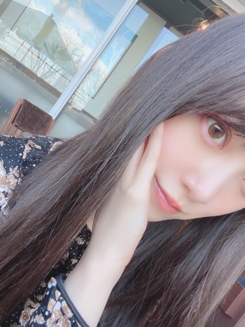
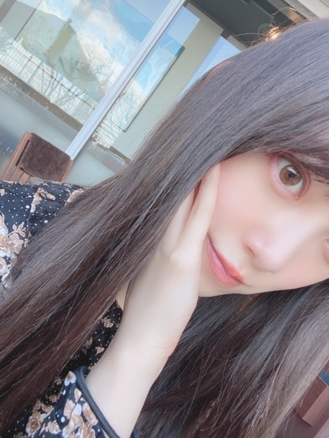

2020/0311Wed春なので
魔女の宅急便
海がきこえる
千と千尋の神隠し
ハウルの動く城
天空の城ラピュタ
風立ちぬ
のサントラをよく聴きます☺︎
映画やドラマのサントラもすき!
サントラって良いですよね
ホットギミックのサントラも欲しい!
あ、まだ観ていない方は是非Netflixにて✨


人見知りを直したいなぁと思うのですが
やはり緊張して静かになってしまうのが悪い癖。
打ち解けるとよく話すんですけどね...
春はやっぱり出会いや別れがたくさんありますね
一期一会を大切に、これからも私らしく
頑張っていきたいです
新しい現場もお別れをする現場も
常に全力で!


最近観た映画は
スケアリーストーリーズ
ロミオとジュリエット
生きてるだけで、愛
IT 最終章
です☺︎
気になってる映画は
パラサイト
ミッドサマー
ナンシー
初恋
ハーレイ・クイン
です☺︎
毎晩寝る前に映画を選んで観て、
あ、たまに寝落ちしてしまうけど
そんな時間が幸せです
今日はなにを観ようかなと悩む時間も好き!
23:45〜
文化放送レコメン！
も聞いてください☺︎

そして今日は3月11日
東日本大震災から9年が経ちました
犠牲となられた方々のご冥福をお祈りいたします...
そして被害に遭われた方々へお見舞い申し上げます
私も今を大切に、一生懸命生きます
3.11 でYahooで検索しましょう!
では
魔女の宅急便
海がきこえる
千と千尋の神隠し
ハウルの動く城
天空の城ラピュタ
風立ちぬ
のサントラをよく聴きます☺︎
映画やドラマのサントラもすき!
サントラって良いですよね
ホットギミックのサントラも欲しい!
あ、まだ観ていない方は是非Netflixにて✨
人見知りを直したいなぁと思うのですが
やはり緊張して静かになってしまうのが悪い癖。
打ち解けるとよく話すんですけどね...
春はやっぱり出会いや別れがたくさんありますね
一期一会を大切に、これからも私らしく
頑張っていきたいです
新しい現場もお別れをする現場も
常に全力で!

最近観た映画は
スケアリーストーリーズ
ロミオとジュリエット
生きてるだけで、愛
IT 最終章
です☺︎
気になってる映画は
パラサイト
ミッドサマー
ナンシー
初恋
ハーレイ・クイン
です☺︎
毎晩寝る前に映画を選んで観て、
あ、たまに寝落ちしてしまうけど
そんな時間が幸せです
今日はなにを観ようかなと悩む時間も好き!
23:45〜
文化放送レコメン！
も聞いてください☺︎
そして今日は3月11日
東日本大震災から9年が経ちました
犠牲となられた方々のご冥福をお祈りいたします...
そして被害に遭われた方々へお見舞い申し上げます
私も今を大切に、一生懸命生きます
3.11 でYahooで検索しましょう!
では
2020/03/11 18:24
コメント(317)
ブログ更新ありがとう
未央奈ちゃん可愛い
レコメン聞くよー、頑張ってねー
未央奈ちゃん可愛い
レコメン聞くよー、頑張ってねー
未央奈～！
震災から9年たったね。
あの地震は怖かった…。
平和を祈るばかりです。
映画観に行きたいけど、我慢してる。
コロナウイルスの影響まだ続いてるね。
早く元通りの日常に戻って、お出掛けしたいです！
未央奈達とも、安全に会えるような環境に早くなってほしいな。
体調には気をつけてね～！
ずっと応援してるよ！！
震災から9年たったね。
あの地震は怖かった…。
平和を祈るばかりです。
映画観に行きたいけど、我慢してる。
コロナウイルスの影響まだ続いてるね。
早く元通りの日常に戻って、お出掛けしたいです！
未央奈達とも、安全に会えるような環境に早くなってほしいな。
体調には気をつけてね～！
ずっと応援してるよ！！
可愛い
ハニーポテト美味しいよ
未央奈ちゃんブログ更新ありがとう！
コスメの投稿とかみて参考にしております❤︎
わたしもサントラ聴くの昔から好きで、ジブリだけじゃなくてディズニーもよく聴いてます！
ホットギミックはこれから観ようと思ってマイリストに追加してる！！
体調に気をつけてお仕事頑張ってください！応援してます(๑˃̵ᴗ˂̵)
コスメの投稿とかみて参考にしております❤︎
わたしもサントラ聴くの昔から好きで、ジブリだけじゃなくてディズニーもよく聴いてます！
ホットギミックはこれから観ようと思ってマイリストに追加してる！！
体調に気をつけてお仕事頑張ってください！応援してます(๑˃̵ᴗ˂̵)
自分もYahooで検索して募金しました！
堀さんが震災について考えているのが分かりました！
これからも頑張ってください！応援しています！
堀さんが震災について考えているのが分かりました！
これからも頑張ってください！応援しています！
『備えよ常に』だね。
事前に水とか食料とか､ある程度買い置きしておけば災害時の買い占めなんて起こらないもんね？
今､東日本大震災前にも起こったスロースリップが千葉､茨城沖で起こってるらしいからね…


事前に水とか食料とか､ある程度買い置きしておけば災害時の買い占めなんて起こらないもんね？
今､東日本大震災前にも起こったスロースリップが千葉､茨城沖で起こってるらしいからね…
別れと出会いの季節、同じく人見知りなんで
新しい出会いは慣れるまでが大変(笑)
新しい出会いは慣れるまでが大変(笑)
未央奈
レコメン聴くね
SONYでした
レコメン聴くね
SONYでした
未央奈さんこんばんは♪
ジブリの曲は聴いてて癒されるね(〃^ー^〃)
ゲームミュージックも名曲揃いだよ！
俺も何か観ようかな(*^^*)
観たい映画がたくさん!
3.11
少しでも貢献したいです
明日も未央奈さんにHAPPYを
お休みなさい(^-^ゞ
ジブリの曲は聴いてて癒されるね(〃^ー^〃)
ゲームミュージックも名曲揃いだよ！
俺も何か観ようかな(*^^*)
観たい映画がたくさん!
3.11
少しでも貢献したいです
明日も未央奈さんにHAPPYを
お休みなさい(^-^ゞ
ブログの更新ありがとうございます！
サントラって作品によりのめり込めるようになる素晴らしいものですよね！
やっぱいすごい作品ってサントラも一緒に思い出せるんで、とっても大事ですよね！
毎年、ヤフーで3.11の検索は力になるを拡散してくださってありがとうございます。
サントラって作品によりのめり込めるようになる素晴らしいものですよね！
やっぱいすごい作品ってサントラも一緒に思い出せるんで、とっても大事ですよね！
毎年、ヤフーで3.11の検索は力になるを拡散してくださってありがとうございます。
ラピュタのサントラは持ってる、聴くと映画の絵が浮かぶ、音楽の力は凄いと感じる時です。
最近スパイダーバースという映画を観ました、アニメのスパイダーマン、面白かったです。
最近スパイダーバースという映画を観ました、アニメのスパイダーマン、面白かったです。
え？海がきこえるってあったっけ？話の流れからジブリ？
僕は、トトロと、ぽんぽこ、千と千尋、思い出のマーニー、猫の恩返し、かぐや姫のものがたりくらいかな。。観た事あるの。
ナンシーはあれだっけ？夏色の…
恋かな？yes！いゃ、違う。早見優さんや。。
目もとにピンクをいれるメーク、良いですね！未央奈ちゃん今日も美人です(≧∇≦)b
下のイラストは、見ざる、聞かざる、言わざる？
僕は、トトロと、ぽんぽこ、千と千尋、思い出のマーニー、猫の恩返し、かぐや姫のものがたりくらいかな。。観た事あるの。
ナンシーはあれだっけ？夏色の…
恋かな？yes！いゃ、違う。早見優さんや。。
目もとにピンクをいれるメーク、良いですね！未央奈ちゃん今日も美人です(≧∇≦)b
下のイラストは、見ざる、聞かざる、言わざる？
みおなすき
春は未央奈の季節だね ☀️
☀️
更新ありがとう！IT怖くなかったですか？感想聞きたいです！レコメン楽しみにしてます
ブログ更新ありがとう！
すっかり3月になりましたね！
ジブリのサントラ良いの多いよねー！
一つ一つの時間を大切にしたいね
レコメン楽しみにしてます！
すっかり3月になりましたね！
ジブリのサントラ良いの多いよねー！
一つ一つの時間を大切にしたいね
レコメン楽しみにしてます！
そうですね……一日も早い復興をお祈りしています。
僕も同級生とか気を使わず話せるようになりたい……！
レコメン聴ける！！ヤッタァァァァ！！
僕も同級生とか気を使わず話せるようになりたい……！
レコメン聴ける！！ヤッタァァァァ！！
堀ちゃん今日もかわいい！
ホットギミックまだ見れてないので学校が休みの間に見ておきたいです！！
ホットギミックまだ見れてないので学校が休みの間に見ておきたいです！！
ほりちゃーん！！
3.11Yahooで検索したよ
1日1日を大切に生きよう！
3.11Yahooで検索したよ
1日1日を大切に生きよう！
パラサイトは面白かったですよ！！
ミッドサマーは僕も気になるので一緒に見に行きましょう！
ミッドサマーは僕も気になるので一緒に見に行きましょう！
ブログ更新ありがとう！学校に行けなくてとても寂しかったけどインスタとかブログとか更新たくさんしてくれて元気もらってます！今日もMVを見漁って未央奈ちゃんたくさん見てました！
サントラは勉強する時によく聞くので今度聞いてみる〜！
最近暖かくなってきたけどお体に気をつけてください！
サントラは勉強する時によく聞くので今度聞いてみる〜！
最近暖かくなってきたけどお体に気をつけてください！
未央奈どの写真もすごく可愛いブログ更新ありがとう！
ジブリ作品の音楽良いよね。久石譲さんすごい。
ホットギミックのサントラも欲しい！
人見知りすごくわかるよ。僕も親しい人には何でも話せるんだけど、親しくなるまでは遠慮して大人しくしちゃう。
一期一会って良い言葉だよね。二期生ライブでハルジオンを選んだ話、山戸監督との出会いがホットギミックに繋がるんだから、一つ一つの出会いを大切にしなきゃと思った。
未央奈は本当によく映画観てるね。僕は全然映画見られてないよ。ロミオとジュリエット見たい。
レコメン聴くよ！
では！
ジブリ作品の音楽良いよね。久石譲さんすごい。
ホットギミックのサントラも欲しい！
人見知りすごくわかるよ。僕も親しい人には何でも話せるんだけど、親しくなるまでは遠慮して大人しくしちゃう。
一期一会って良い言葉だよね。二期生ライブでハルジオンを選んだ話、山戸監督との出会いがホットギミックに繋がるんだから、一つ一つの出会いを大切にしなきゃと思った。
未央奈は本当によく映画観てるね。僕は全然映画見られてないよ。ロミオとジュリエット見たい。
レコメン聴くよ！
では！
未央奈～ 最初の画像2枚彼女なうに使ってもいー？
未央奈〜今日もお疲れ様！
自分もサントラ聞いたりします！映画のサントラいいですよね〜
自分も人見知りで中々治せません 未央奈との握手会も緊張してあまり話せんw
未央奈との握手会も緊張してあまり話せんw
今年は一期一会を大切にして、努力、感謝、笑顔を大切にしていきます！あと、体重を落とす！笑
自分も今年に入って映画みはじめてます！
今年は、スターウォーズとスマホを落としただけなのにを見てきました！他の気になる映画も多いので時間を作って見に行こうと思います！
3.11、あの日のことは忘れません。1人ではできないこともみんなで協力すればできる。それを実感した日になりました。
犠牲となられた方々のご冥福をお祈りいたします...
そして被害に遭われた方々へお見舞い申し上げます。
自分もサントラ聞いたりします！映画のサントラいいですよね〜
自分も人見知りで中々治せません
今年は一期一会を大切にして、努力、感謝、笑顔を大切にしていきます！あと、体重を落とす！笑
自分も今年に入って映画みはじめてます！
今年は、スターウォーズとスマホを落としただけなのにを見てきました！他の気になる映画も多いので時間を作って見に行こうと思います！
3.11、あの日のことは忘れません。1人ではできないこともみんなで協力すればできる。それを実感した日になりました。
犠牲となられた方々のご冥福をお祈りいたします...
そして被害に遭われた方々へお見舞い申し上げます。
未央奈ちゃんブログ更新ありがとう。ハウルの動く城、魔女の宅急便、千と千尋の神隠し、天空の城ラピュタのサウンドトラックイイね。またブログ更新楽しみにしてるよ。
未央奈ちゃん♪こんばんは＼(^o^)／ブログの更新ありがとう♪コメント遅くなってゴメンね(泣)
サントラ良いよね！俺も子供頃からよくドラマとかのサントラ聴いてたよ。最近はあんまり聴かないけど、ホットギミックのサントラ聴いてみたいよ♪俺の知り合いも人見知りで「人見知りを直したい」って言ってたよ！でも、「中々直らない」って言ってたよ(^_^;)難しいね。春は確かに出会いや別れがあるよね。俺も俺らしく頑張るね！あと、俺も最近寝る前に映画とか観てるよ♪未央奈ちゃんが観た映画観てみるね♪今日はなに観ようかなって悩む時間良いよね♪凄くわかるよ(о´∀`о)あと、レコメン楽しみにしてるね♪また、ブログの更新楽しみにしてるね♪未央奈ちゃん大好きだよ♪では 堀 未央奈神推し秀喜より！(≧▽≦)
サントラ良いよね！俺も子供頃からよくドラマとかのサントラ聴いてたよ。最近はあんまり聴かないけど、ホットギミックのサントラ聴いてみたいよ♪俺の知り合いも人見知りで「人見知りを直したい」って言ってたよ！でも、「中々直らない」って言ってたよ(^_^;)難しいね。春は確かに出会いや別れがあるよね。俺も俺らしく頑張るね！あと、俺も最近寝る前に映画とか観てるよ♪未央奈ちゃんが観た映画観てみるね♪今日はなに観ようかなって悩む時間良いよね♪凄くわかるよ(о´∀`о)あと、レコメン楽しみにしてるね♪また、ブログの更新楽しみにしてるね♪未央奈ちゃん大好きだよ♪では 堀 未央奈神推し秀喜より！(≧▽≦)
お疲れ様です。未央奈ちゃんはジブリ好きだった のですね。自分もたまに見てますが、イイですね!!あと人見知りはなおすのはたいへんですが、良くなるといいですね!！！
1枚目と、2枚目の写真の右下にある物体牛の被り物かと思ったら照明でした笑笑
ハワイいいな！経験してみたいな！
3.11応援活動ありがとうございます！
ハワイいいな！経験してみたいな！
3.11応援活動ありがとうございます！
ブ～ン、飛んできたよっ 
未央奈先生、写真めちゃ可愛いです。
映画といえば『いつのまにか、ここにいる』です。
映画館で観たけど改めてブルーレイでも観ましたが
個々の集合体が『乃木坂46』なんだなぁと感じました。
とても良かったですよ！
see you！ (^^)/
未央奈先生、写真めちゃ可愛いです。
映画といえば『いつのまにか、ここにいる』です。
映画館で観たけど改めてブルーレイでも観ましたが
個々の集合体が『乃木坂46』なんだなぁと感じました。
とても良かったですよ！
see you！ (^^)/
ホットギミックおととい見たよーー！
めっちゃ良かった！！
未央奈を取り巻く3人に嫉妬した笑笑
ホットギミックと、アナスターシャどハマりして、ひたすら2期とか未央奈の動画とかブログとか見てます！
今日も夏まで遡りましたー笑
ほんとにほんとに大好きです！
大学受かったら握手会行きます！
福岡にも来てほしいです！
めっちゃ良かった！！
未央奈を取り巻く3人に嫉妬した笑笑
ホットギミックと、アナスターシャどハマりして、ひたすら2期とか未央奈の動画とかブログとか見てます！
今日も夏まで遡りましたー笑
ほんとにほんとに大好きです！
大学受かったら握手会行きます！
福岡にも来てほしいです！
お疲れ様です、そして
ブログ更新ありがとうございます！
ホットギミックまだみてないから、
見たいと思います！
これからも応援してます
ブログ更新ありがとうございます！
ホットギミックまだみてないから、
見たいと思います！
これからも応援してます
ブログ更新ありがとー！
写真集絶対買う！！
楽しみにしてるよー！！
写真集絶対買う！！
楽しみにしてるよー！！
堀未央奈❤こんばんは❗アニメの曲聴いてるんだね(^o^)v毎晩映画観て寝てるんだね(^o^)v遅くまで観ているの？寝不足にならないように気を付けてね(^o^)v未央奈って人見知りなんだね。始めての人とは話せないよね。分かるよ。俺も未央奈と同じだからね。慣れると話せるようになるよね(^o^)v今日の写真も可愛いよね(*^O^*)ホットギミックの映画俺も観たいけどDVD発売にならないのかな？今日も愛してる ♥❤おやすみ(-_-)zzz未央奈（*⌒３⌒*）またね(*^O^*)これからも体調に気を付けて頑張ってね(*^_^*)
みおちゃん♡
今日は3.11
帰る家があること。行く仕事があること。会いたい人に会えること。
当たり前のことに改めて感謝する日です。
みおちゃんに出逢えたことにも感謝。
いつもありがとうね。
今日は3.11
帰る家があること。行く仕事があること。会いたい人に会えること。
当たり前のことに改めて感謝する日です。
みおちゃんに出逢えたことにも感謝。
いつもありがとうね。
こんばんは
別れと出会いの季節ですね
一期一会を大切にしたい
3.11は忘れてはいけないことですよね
今夜もレコメン楽しみにしています
別れと出会いの季節ですね
一期一会を大切にしたい
3.11は忘れてはいけないことですよね
今夜もレコメン楽しみにしています
ＰＳ，いつもかわいい写真ありがとうございます!最後のは見ざる、言わざる、聞かざるですか?
映画のおすすめありがとうございます。
そういえば、ロミオとジュリエットはいくつかのバージョンがあったらしい、どのバージョンですか。
ジブリのサントラ私も大好きです。何百回聴いたと言っても過言ではないほど。ほかには猫の恩返し、耳をすませば、借りぐらしのアリエッティも
ゲド戦記のテルーの唄、何回聴いても涙が思わず出ます。なんでだろう。。。
ホットギミックのサントラ一番好きなのはパッヘルベルのカノンです。青春にぴったり感動的な世界名曲です。
1999年に台湾にも921大地震と呼ばれる災難が起こった。私は当時まだ子供だった。
日本と同じ地震多発地帯だから、地震の怖さと人の痛みよく存じておりますね。
そういえば、ロミオとジュリエットはいくつかのバージョンがあったらしい、どのバージョンですか。
ジブリのサントラ私も大好きです。何百回聴いたと言っても過言ではないほど。ほかには猫の恩返し、耳をすませば、借りぐらしのアリエッティも
ゲド戦記のテルーの唄、何回聴いても涙が思わず出ます。なんでだろう。。。
ホットギミックのサントラ一番好きなのはパッヘルベルのカノンです。青春にぴったり感動的な世界名曲です。
1999年に台湾にも921大地震と呼ばれる災難が起こった。私は当時まだ子供だった。
日本と同じ地震多発地帯だから、地震の怖さと人の痛みよく存じておりますね。
未央奈ちゃん！
ブログ更新ありがとう！
ホットギミック映画でもみました！
パンフレットも買いました！
勿論ネットフリックスでもみました！
モバメもとってます！
大好きです！
ブログ更新ありがとう！
ホットギミック映画でもみました！
パンフレットも買いました！
勿論ネットフリックスでもみました！
モバメもとってます！
大好きです！
かわい
サントラ。
良いですね。
(^ー^)
私も持っていますよ。
良いですね。
(^ー^)
私も持っていますよ。
未央奈ブログ更新ありがとう！
もうすぐ春だね！
シングル発売に握手会と乃木坂のイベントも沢山あるし
楽しみだな〜！早く未央奈とも握手したいよ〜！
人見知りな所もまた可愛い！
この頃未央奈の笑顔が沢山見られて幸せです！
ありのままの未央奈が大好き！
春も近づいてお仕事忙しいかもしれないけど
無理せず頑張ってね！応援してるよ！
この後のレコメン頑張ってね！
楽しみに待ってます！
もうすぐ春だね！
シングル発売に握手会と乃木坂のイベントも沢山あるし
楽しみだな〜！早く未央奈とも握手したいよ〜！
人見知りな所もまた可愛い！
この頃未央奈の笑顔が沢山見られて幸せです！
ありのままの未央奈が大好き！
春も近づいてお仕事忙しいかもしれないけど
無理せず頑張ってね！応援してるよ！
この後のレコメン頑張ってね！
楽しみに待ってます！
ブログ更新ありがとう！
未央奈はジブリの主題歌って聞くかな？
私はよく聞くんだけど、木村弓さんのいのちの名前が大好きでもし聞いたことがなかったらぜひ聞いてみて！
レコメン楽しみ！
またねー
未央奈はジブリの主題歌って聞くかな？
私はよく聞くんだけど、木村弓さんのいのちの名前が大好きでもし聞いたことがなかったらぜひ聞いてみて！
レコメン楽しみ！
またねー
えー今日は東日本大震災から9年が経ちました!
被災地は復旧復興は未だ未だじゃないかなって思いますけれども、中には避難生活を続けている人も消して少ない訳ではありません!
此れからも我々日本人は自然災害に向き会って生きて行くべきですし、命を大切にして行くべきですね!
こんばんはー
レコメン楽しみにしてます。二期生曲すごくいい曲ですねー回数聞くたびにいろんな感情が出てきます。応援してます
レコメン楽しみにしてます。二期生曲すごくいい曲ですねー回数聞くたびにいろんな感情が出てきます。応援してます
本当かわいい大好き 愛してる
こんばんは。ブログ更新ありがとうございます。
サントラはTVアニメのものも良いですよね。
私は人見知りはしないですが、ナンパができるほどフレンドリーではないです。若い頃は出会いを求めて海やカルチャー教室にいったりしましたが、どれも上手くいきませんでした。結局、友達と行ったスキーで知り合った女性と結婚できたので、結局はえにしなのだと悟りました。今年も春がやってきますが、出会いはあるかな？
ではまた。
サントラはTVアニメのものも良いですよね。
私は人見知りはしないですが、ナンパができるほどフレンドリーではないです。若い頃は出会いを求めて海やカルチャー教室にいったりしましたが、どれも上手くいきませんでした。結局、友達と行ったスキーで知り合った女性と結婚できたので、結局はえにしなのだと悟りました。今年も春がやってきますが、出会いはあるかな？
ではまた。
みおな
ブログ更新ありがとう
ジブリの曲すっごく良いよね！
私は、あの夏へ、人生のメリーゴーランド、世界の約束、優しさに包まれたなら が好きだよ！
他の曲も聞いてみるね！
学校が休みで時間がたくさんあるから、みおなが見た映画見てみようかな〜って思ってる！
いつも元気をくれるみおなが大好き！
体調に気を付けて、無理せず頑張ってね☺️
ブログ更新ありがとう
ジブリの曲すっごく良いよね！
私は、あの夏へ、人生のメリーゴーランド、世界の約束、優しさに包まれたなら が好きだよ！
他の曲も聞いてみるね！
学校が休みで時間がたくさんあるから、みおなが見た映画見てみようかな〜って思ってる！
いつも元気をくれるみおなが大好き！
体調に気を付けて、無理せず頑張ってね☺️
可愛すぎ。コロナとか風邪に気を付けて


最近はサントラ買ってないなぁ。
映画をあまり観てないからだなぁ。
未央奈ちゃんは、流石の映画観様ですね！
今日はテレビでもラジオでも震災特集してますね。
もう9年も経ったんですね。
早いです。
レコメン！聴きますね☆